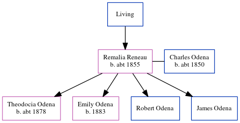

Remalia Odena (née Reneau) c1855 -
[ Home ] | [ Calendar ] | [ Surnames Index ] | [ Census Index ] | [ Family History ]The child of John Reneau, Remalia Reneau, the wife of Charles T Odena (the three times great-uncle of Michele Copp (née Phillips)), was born in Georgia c. 18551,2had 4 children, Theodocia Josephine, Emily, Robert White and James Frederick.
During her life, she was living in Montgomery Ward 6, Montgomery, Alabama in 18701; and in Osceola Town, Mississippi, Arkansas in 19002.
Parents
- John Tipton
Children
- Theodocia Josephine was born c. 1878
- Emily was born in 1883
Citations
- 1870 United States Federal Census Online publication - Provo, UT, USA: The Generations Network, Inc., 2003.Original data - 1870. United States. Ninth Census of the United States, 1870. Washington, D.C. National Archives and Records Administration. M593, RG29, 1,761 rolls. Minnesota. Minnes
- 1900 United States Federal Census Online publication - Provo, UT, USA: MyFamily.com, Inc., 2004.Original data - United States of America, Bureau of the Census. Twelfth Census of the United States, 1900. Washington, D.C.: National Archives and Records Administration, 1900. T623, 1854 rolls.
Family Tree
Generated by ged2site. Last updated on Jun 6, 2024